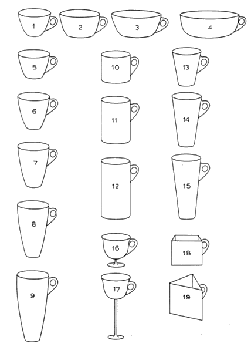
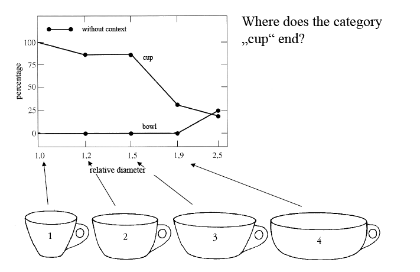
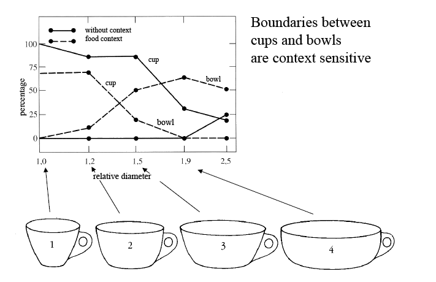
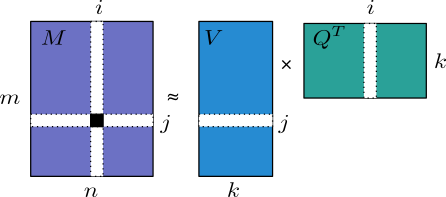
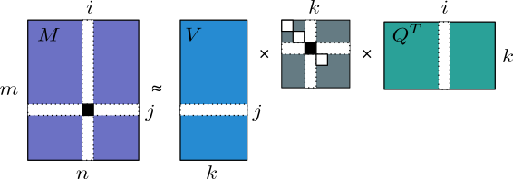
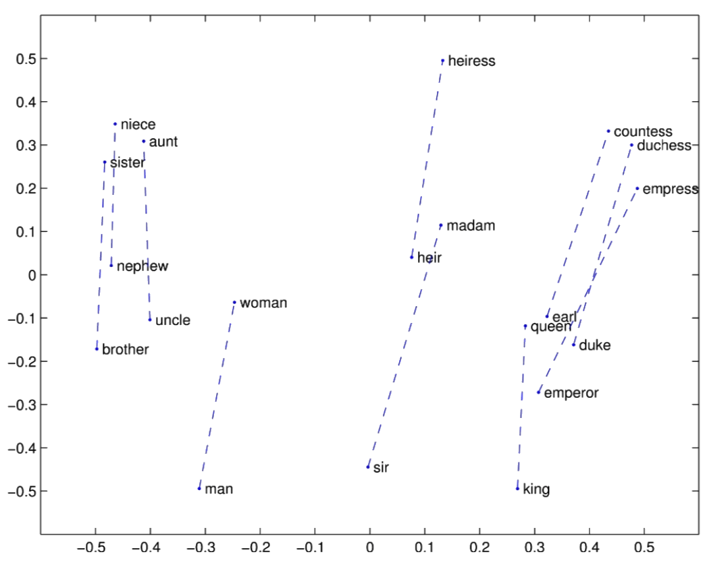
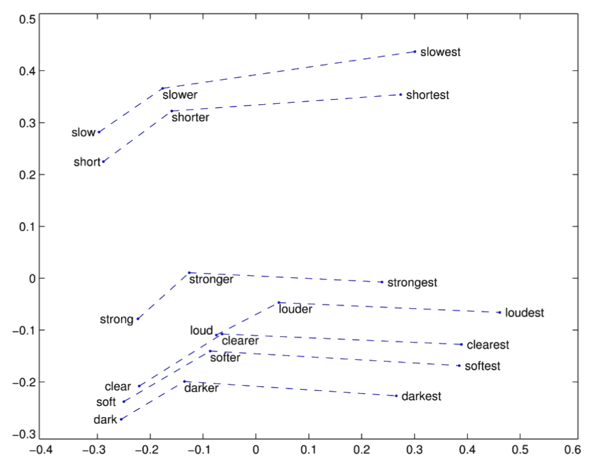
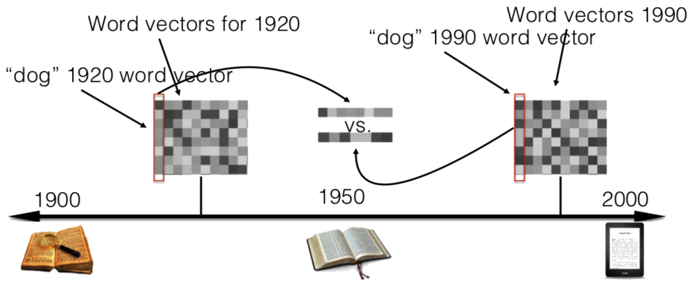
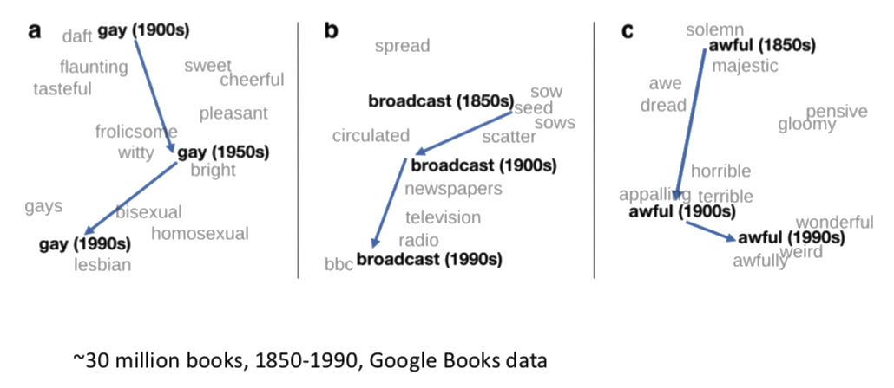
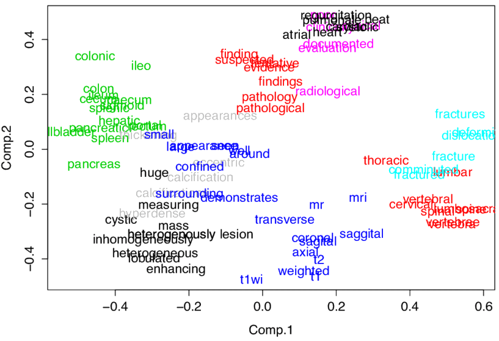

CS8850
Advanced Machine Learning

| # | date | topic | description |
|---|---|---|---|
| 1 | 24-Aug-2026 | Introduction | |
| 2 | 26-Aug-2026 | Foundations of learning | Drop/Add |
| 3 | 31-Aug-2026 | PAC learnability | HW1 |
| 4 | 02-Sep-2026 | Linear learning models | |
| 5 | 07-Sep-2026 | Labor Day Holiday | Holiday |
| 6 | 09-Sep-2026 | Principal Component Analysis | Project ideas |
| 7 | 14-Sep-2026 | Curse of Dimensionality | HW2, HW1 due |
| 8 | 16-Sep-2026 | Bayesian Decision Theory | |
| 9 | 21-Sep-2026 | Parameter estimation: MLE | |
| 10 | 23-Sep-2026 | Parameter estimation: MAP & NB | finalize teams |
| 11 | 28-Sep-2026 | Logistic Regression | HW3, HW2 due |
| 12 | 30-Sep-2026 | Kernel Density Estimation | |
| 13 | 05-Oct-2026 | Support Vector Machines | |
| 14 | 07-Oct-2026 | Matrix Factorization | |
| 15 | 12-Oct-2026 | * Midterm | Exam, HW3 due |
| 16 | 14-Oct-2026 | k-means clustering | |
| 17 | 19-Oct-2026 | Invited: Intro to Causal Learning I |
| # | date | topic | description |
|---|---|---|---|
| 18 | 21-Oct-2026 | Invited: Intro to Causal Learning II | |
| 19 | 26-Oct-2026 | * Mid-point projects checkpoint | HW4, P |
| 20 | 28-Oct-2026 | Expectation Maximization | |
| 21 | 02-Nov-2026 | Stochastic Gradient Descent | |
| 22 | 04-Nov-2026 | Automatic Differentiation | |
| 23 | 09-Nov-2026 | Nonlinear embedding approaches | HW5, HW4 due |
| 24 | 11-Nov-2026 | Model comparison & calibration | |
| 25 | 16-Nov-2026 | Convolutional Neural Networks | |
| 26 | 18-Nov-2026 | Word Embedding | |
| 27 | 23-Nov-2026 | Thanksgiving Break | Holiday |
| 28 | 25-Nov-2026 | Thanksgiving Break | Holiday |
| 29 | 30-Nov-2026 | * Final Exam | Exam |
| 30 | 02-Dec-2026 | Project Final Presentations | HW5 due, P |
| 31 | 07-Dec-2026 | No class | Classes End |
| 32 | 16-Dec-2026 | Project Reports | due |
| 33 | 17-Dec-2026 | Grades due 5 p.m. | PAWS |
| # | date | topic |
|---|---|---|
| 4 | 02-Sep-2026 | Linear learning models |
| 6 | 09-Sep-2026 | Principal Component Analysis |
| 7 | 14-Sep-2026 | Curse of Dimensionality |
| 9–10 | Sep 2026 | MLE, MAP & Naive Bayes |
| 11 | 28-Sep-2026 | Logistic Regression |
| 14 | 07-Oct-2026 | Matrix Factorization |
| 21 | 02-Nov-2026 | Stochastic Gradient Descent |
| 22 | 04-Nov-2026 | Automatic Differentiation |
| 23 | 09-Nov-2026 | Nonlinear embedding approaches |
| 25 | 16-Nov-2026 | Convolutional Neural Networks |
| 26 | 18-Nov-2026 | Word Embedding |
Before we embed words as vectors, how do humans and linguists define what a word means?



Even a simple physical vessel has probabilistic, graded boundaries that shift immediately with surrounding context!
Misusing context breaks meaning:
“A man loses his dog, so he puts an ad in the paper. And the ad says, ‘Here, boy!’”
66. Consider for example the proceedings that we call "games". I mean board-games, card-games, ball-games, Olympic games, and so on. What is common to them all? -- Don't say: "There must be something common, or they would not be called 'games'" -- but look and see whether there is anything common to all. -- For if you look at them you will not see something that is common to all, but similarities, relationships, and a whole series of them at that. To repeat: don't think, but look! -- Look for example at board-games, with their multifarious relationships. Now pass to card-games; here you find many correspondences with the first group, but many common features drop out, and others appear. When we pass next to ball-games, much that is common is retained, but much is lost. -- Are they all 'amusing'? Compare chess with noughts and crosses. Or is there always winning and losing, or competition between players? Think of patience. In ball games there is winning and losing; but when a child throws his ball at the wall and catches it again, this feature has disappeared. Look at the parts played by skill and luck; and at the difference between skill in chess and skill in tennis. Think now of games like ring-a-ring-a-roses; here is the element of amusement, but how many other characteristic features have disappeared! And we can go through the many, many other groups of games in the same way; can see how similarities crop up and disappear.
And the result of this examination is: we see a complicated network of similarities overlapping and criss-crossing: sometimes overall similarities.
67. I can think of no better expression to characterize these similarities than "family resemblances"; for the various resemblances between members of a family: build, features, colour of eyes, gait, temperament, etc. etc. overlap and criss-cross in the same way. -- And I shall say: 'games' form a family.
And for instance the kinds of number form a family in the same way. Why do we call something a "number"? Well, perhaps because it has a direct relationship with several things that have hitherto been called number; and this can be said to give it an indirect relationship to other things we call the same name. And we extend our concept of number as in spinning a thread we twist fibre on fibre. And the strength of the thread does not reside in the fact that some one fibre runs through its whole length, but in the overlapping of many fibres.
But if someone wished to say: "There is something common to all these constructions -- namely the disjunction of all their common properties" -- I should reply: Now you are only playing with words. One might as well say: "Something runs through the whole thread -- namely the continuous overlapping of those fibres".
Shift from normative (prescriptive rules) to observational (empirical corpus usage):
“The meaning of a word is its use in the language.” — Ludwig Wittgenstein (1953)
“If $A$ and $B$ have almost identical environments we say that they are synonyms.” — Zellig Harris (1954)
“You shall know a word by the company it keeps.” — J. R. Firth (1957)
Suppose you see these sentences:
And you have already seen these:
$\vec{w}_i \in \{0,1\}^{|V|}$ gives $O(|V|)$ sparse vectors where $\vec{w}_i^\top \vec{w}_j = \delta_{ij}$ and $\|\vec{w}_{\text{cat}} - \vec{w}_{\text{kitten}}\|_2 = \|\vec{w}_{\text{cat}} - \vec{w}_{\text{truck}}\|_2 = \sqrt{2}$!
Represent document $d$ as the sum of its one-hot word tokens:
$\displaystyle \vec{c}_d = \sum_{t \in d} \vec{w}_t \in \NN^{|V|}, \qquad \cos(\vec{c}_a, \vec{c}_b) = \frac{\vec{c}_a^\top \vec{c}_b}{\|\vec{c}_a\|_2 \|\vec{c}_b\|_2}$
the, of, and flood inner products without signaling topic.
$w_{i,j} = \text{tf}_{i,j}$ — Term Frequency: occurrences of word $i$ in document $j$
$\displaystyle \text{idf}_i = -\log \prob{P}{w_i \mid D} = \log \frac{1}{\prob{P}{w_i \mid D}} = \log\!\left(\frac{N}{\text{df}_i}\right)$$\text{df}_i =$ documents containing word $i$, $\quad N =$ total documents
$\displaystyle w_{i,j} = \text{tf}_{i,j} \times \log\!\left(\frac{N}{\text{df}_i}\right)$
Replace single-word tokens with sliding windows of $n$ consecutive tokens: $P(w_t \mid w_{t-n+1}, \dots, w_{t-1})$
1-in-|V|) is the discrete starting point.
cat vs. kitten)!
the, and) AND frequent domain boilerplate (unknown in advance!) dominate raw counts!
Do focus word $w$ and context word $c$ co-occur more than if independent?
$$\prob{PMI}{w, c} = \log_2 \frac{\prob{p}{c, w}}{\underbrace{\prob{p}{w}\,\prob{p}{c}}_{\text{independence baseline}}}$$
$\displaystyle \prob{PMI}{w, c} = \log_2 \frac{\prob{count}{c, w} \times N}{\prob{count}{c} \times \prob{count}{w}}$
$\prob{PPMI}{w, c} = \max\!\big(\prob{PMI}{w, c},\; 0\big)$
Individual conditionals $P(k \mid \text{ice}) \sim 10^{-4}$ look tiny — yet the ratio $\frac{P(k \mid \text{ice})}{P(k \mid \text{steam})}$ cancels shared noise (water$\approx 1.36$,fashion$\approx 0.96$) while recovering the physics of solid ($8.9$) vs. gas ($0.085$)!
Require vector differences $\vec{w}_i - \vec{w}_j$ to encode probability ratios $P_{ik} / P_{jk}$:
$F\!\big((\vec{w}_i - \vec{w}_j)^\top \tilde{\bm{w}}_k\big) = \frac{P_{ik}}{P_{jk}} \;\xrightarrow{F = \exp,\; X_{ik}=X_{ki}}\; \vec{w}_i^\top \tilde{\bm{w}}_k + b_i + \tilde{b}_k = \log X_{ik}$
$\displaystyle {\cal J}_{\text{GloVe}} = \sum_{i,j=1}^{|V|} f(X_{ij})\Big(\underbrace{\vec{w}_i^\top \tilde{\bm{w}}_j + b_i + \tilde{b}_j}_{\text{bilateral linear fit}} - \log X_{ij}\Big)^2, \qquad f(x) = \min\!\left(1, \left(\frac{x}{x_{\max}}\right)^{3/4}\right)$

Assuming $|V| \times |V|$ counts live near a $k$-dimensional manifold ($k \approx 100 \ll 10^5$), low-rank factorization yields dense vectors where $\vec{v}_i^\top \vec{v}_j \approx M_{ij}$.

$\bm{M} \approx \bm{U}_k \bm{\Sigma}_k \bm{V}_k^\top \implies \bm{W}_{\text{words}} = \bm{U}_k \bm{\Sigma}_k \in \RR^{|V| \times k}$ (dropping small singular values turns sparse counts dense!)
Remember PCA & linear autoencoders (Lectures 6 & 14): drop the nonlinearity and train $\bm{W}_e \in \RR^{|V| \times d}, \bm{W}_d \in \RR^{d \times |V|}$ to predict neighboring words instead of self-identity!
Key insight: $\vec{v}_i = \bm{W}_e^\top \vec{w}_i$ is trivial ($O(1)$), whereas scoring every word $\bm{W}_d^\top \vec{v}_i$ for Softmax requires $O(|V|\cdot d)$ operations!
Window of $5$: given context $(w_{t-2}, w_{t-1}, w_{t+1}, w_{t+2})$, predict center word $w_t$ (index $j$):
Distributive Multi-Hot Trick:
$\vec{v}_{\text{ctx}} = \bm{W}_e^\top \vec{w}_{t-2} + \bm{W}_e^\top \vec{w}_{t-1} + \bm{W}_e^\top \vec{w}_{t+1} + \bm{W}_e^\top \vec{w}_{t+2} = \bm{W}_e^\top \underbrace{(\vec{w}_{t-2} + \vec{w}_{t-1} + \vec{w}_{t+1} + \vec{w}_{t+2})}_{\text{single binary vector } \Rightarrow \text{ sum 4 rows of } \bm{W}_e!}$
$\displaystyle \hat{y}_j = \frac{\exp\!\big(\vec{v}_{\text{ctx}}^\top \vec{u}_j\big)}{\sum_{k=1}^{|V|} \exp\!\big(\vec{v}_{\text{ctx}}^\top \vec{u}_k\big)}, \qquad {\cal L}_{\text{CE}} = -\log \hat{y}_j, \qquad \vec{u}_k = (\bm{W}_d)_{:,k}$
word2vec.c made CBOW look weaker — kōan (2020) fixed it and matched Skip-Gram!
Flip the direction: from a single target $\vec{w}_t \xrightarrow{\bm{W}_e^\top} \vec{v}_t$, predict every context word $w_c \in {\cal C}(t)$:
$\displaystyle P(w_c \mid w_t) = \frac{\exp\!\big(\vec{v}_t^\top \vec{u}_c\big)}{\underbrace{\sum_{k=1}^{|V|} \exp\!\big(\vec{v}_t^\top \vec{u}_k\big)}_{\mathbf{O(|V|\cdot d)} \text{ over } |V| \sim 10^6 \text{ words!}}}, \qquad {\cal L}_{\text{SG}} = -\sum_{t=1}^{T}\sum_{\substack{-m \le j \le m \\ j \neq 0}} \log P(w_{t+j} \mid w_t)$
Reverse-Mode AD Gradient (Lecture 18): $\quad \displaystyle \frac{\partial {\cal L}_{\text{SG}}}{\partial \vec{v}_t} = -\underbrace{\vec{u}_c}_{\text{pull positive}} + \underbrace{\sum_{k=1}^{|V|} P(w_k \mid w_t)\,\vec{u}_k}_{\text{push ALL } |V| \text{ words!}}$
Example window: "... a teaspoon of apricot jam ..." — turn $|V|$-way softmax into binary Logistic Regression (Lecture 11)!
(apricot, teaspoon), (apricot, jam), (apricot, of), (apricot, a)
(apricot, pizza), (apricot, yummy), (apricot, freeze)
$P(D=1 \mid w_t, w_c) = \sigma(\vec{v}_t^\top \vec{u}_c) = \dfrac{1}{1 + e^{-\vec{v}_t^\top \vec{u}_c}}$
$P(D=0 \mid w_t, w_n) = 1 - \sigma(\vec{v}_t^\top \vec{u}_n) = \dfrac{e^{-\vec{v}_t^\top \vec{u}_n}}{1 + e^{-\vec{v}_t^\top \vec{u}_n}} = \sigma(-\vec{v}_t^\top \vec{u}_n)$
$\displaystyle \ell_{\text{SGNS}} = \log \sigma(\vec{v}_t^\top \vec{u}_c) + \sum_{k=1}^K \log \sigma(-\vec{v}_t^\top \vec{u}_{n_k})$
$\#(w_t, w_c)\,\sigma(-s) = K\,\#(w_t)\,P_{0.75}(w_c)\,\sigma(s)$
$\displaystyle \implies \vec{v}_t^\top \vec{u}_c = \log \frac{P(w_t, w_c)}{P(w_t)\,P_{0.75}(w_c)} - \log K$
Linear relational offsets, Procrustes drift alignment & measuring human creativity.
$\vec{v}_{\text{king}} - \vec{v}_{\text{man}} + \vec{v}_{\text{woman}} \approx \vec{v}_{\text{queen}} \qquad\qquad \hat{w}^* = \argmax_{w \notin \{a,b,c\}} \cos\!\big(\vec{v}_w,\; \vec{v}_b - \vec{v}_a + \vec{v}_c\big)$


Important Caveat: Distributional embeddings inherit — and can amplify — human cultural & gender stereotypes present in training corpora (Bolukbasi et al., NeurIPS 2016).

Why can't we subtract 1920 and 1990 vectors directly? Each SVD/SGNS run has an arbitrary rotation ($\bm{U}\bm{Q}(\bm{V}\bm{Q})^\top = \bm{U}\bm{V}^\top$)!
Orthogonal Procrustes Alignment: $\;\displaystyle \bm{R}^* = \argmin_{\bm{Q}^\top \bm{Q} = \bm{I}} \big\|\bm{W}^{(t)}\bm{Q} - \bm{W}^{(t+1)}\big\|_F = \bm{U}\bm{V}^\top \quad (\text{via SVD of }\bm{W}^{(t+1)\top}\bm{W}^{(t)})$

gay moves from daft / cheerful (1900s) $\to$ witty / bright (1950s) $\to$ modern identity (1990s).
broadcast shifts from scattering seeds (1850s) $\to$ newspapers $\to$ radio / TV / BBC!
awful turns from solemn majesty (1850s) $\to$ horrible / terrible (1900s+).
Divergent Association Task (DAT): Name $7$ unrelated nouns as semantically far apart as possible!
$\displaystyle \text{DAT}\big(\{w_1, \dots, w_7\}\big) = \frac{100}{\binom{7}{2}} \sum_{1 \le i < j \le 7} \Big(1 - \cos\!\big(\vec{v}_{w_i},\, \vec{v}_{w_j}\big)\Big)$
From static word tables to BPE subwords, self-attention, InfoNCE & Matryoshka spaces (2016–2026).
"unbelievably"), biomedical compounds, typos, and code identifiers fall into a single <UNK> bucket — and static tables ignore shared roots like play / playing / replay.

$\displaystyle \vec{v}_w = \sum_{g \in {\cal G}(w)} \vec{z}_g$
"apricot" by its character $3\text{–}6$-grams: <ap, apr, pri, ric, ico, cot, ot>.un + believ + ably, token + ization.<UNK> tokens! Universal input vocabulary of GPT, Llama, Claude & Gemini.
Every modern LLM begins with Word2Vec-style lookup $\vec{x}_i^{(0)} = \bm{W}_e^\top \vec{w}_i + \vec{p}_i$ — then remixes context dynamically!
$\displaystyle \vec{h}_i = \sum_{j=1}^{T} \underbrace{\operatorname{softmax}_j\!\left(\frac{(\bm{W}_Q \vec{x}_i)^\top (\bm{W}_K \vec{x}_j)}{\sqrt{d_k}}\right)}_{\text{context-dependent similarity } \alpha_{ij}} \bm{W}_V \vec{x}_j, \qquad P(w_{\text{next}} \mid \vec{h}_T) = \operatorname{softmax}\!\big(\underbrace{\bm{W}_e}_{\text{weight-tied!}} \vec{h}_T\big)$